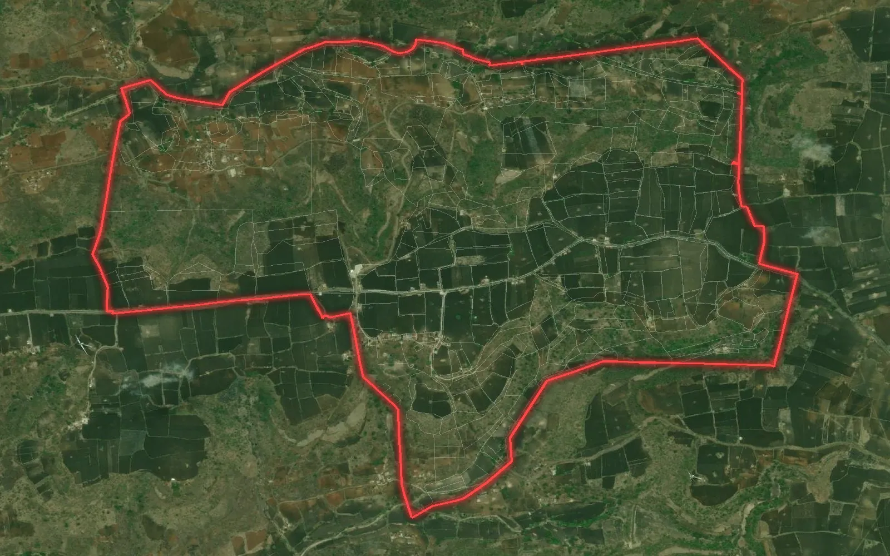

FMB sketch vs village map: what is the difference and which one do you need?

Land teams often get two kinds of drawings from the revenue records: the sketch of one survey number and the map of the whole village. They look alike but answer different questions. Here is what each one is and when you need which.
What is an FMB sketch?
FMB stands for Field Measurement Book. An FMB sketch is the measured drawing of a single survey number (khasra, gat or dag in other states): its outline drawn to scale, the length of every side, the chain line and offsets used in the old survey, the survey numbers on every side and the area. The name is used in states such as Tamil Nadu and Andhra Pradesh; other states keep similar plot sketches under their own names.
- One survey number (sometimes with its sub-divisions) per sheet
- Side lengths and measurements written on the drawing
- Neighbouring survey numbers named, but not drawn in full
- Usually on a local paper grid - no real-world coordinates
What is a village map?
The village map, also called the cadastral or revenue map, shows every plot of the village together on one sheet: plot numbers, cart tracks, streams, tanks, the abadi (settlement) and the village boundary. Many states now show it online on a Bhunaksha-type portal or a state GIS.
- All plots of the village and how they fit together
- Roads, tracks, nallahs and the outer village boundary
- Smaller scale - side lengths are not written for every plot
- Often on its own sheet grid; georeferencing places it on the earth
Side by side
- Question it answers - FMB: exact shape and size of one plot. Village map: where the plot lies and what is around it.
- Detail - FMB: side lengths and corners. Village map: layout of hundreds of plots.
- Typical use - FMB: sale or lease deed, demarcation, conversion file. Village map: project planning, route and site selection, land schedules.
- Field work - both are drawings of the record; a DGPS or Total Station survey shows where the corners are on the ground today.
When you need the FMB sketch
- Registration or lease of one survey number, where the deed refers to its boundaries
- Demarcation of a plot, or a dispute about one boundary
- Wind turbine land, where each WTG survey number needs its own sketch - see our guide on FMB for wind projects
- Conversion or approval files that ask for the sketch of each survey number used
When you need the village map
- Solar parks, industrial land and townships, where many plots must form one block
- Transmission lines, roads and pipelines, where a route crosses many plots and villages
- Finding government land, forest land and the plots that are already private
- Making a khasra-wise land schedule for a whole project
Turning them into GIS files
Neither drawing is ready for Google Earth or AutoCAD as it comes. A village map is digitized plot by plot and georeferenced to satellite imagery in WGS 84 / UTM, so every plot becomes a polygon with its number. An FMB can then be checked against that map: its side lengths confirm the plot shape, and the georeferenced map gives its corners real coordinates. On a project the two together, plus a field survey where the boundary matters, give a land team a reliable picture.
Both drawings show the record, not a title: the record of rights and the revenue office stay the legal source. BHU-NETRA Map Service is a private service and is not connected with any state government.
See the khasra map page of your state with a free sample, check your village with the village checker, read FMB for wind projects and village boundary map, or ask for a quotation.
Need khasra maps or a survey?
Georeferenced and digitized khasra maps in KML, DWG, SHP and Excel for 20 states, plus DGPS, Total Station, topographic and drone surveys. Single village orders welcome.